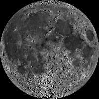
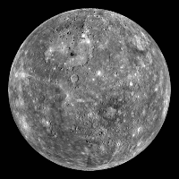
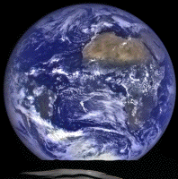

| Attributes | Mercury | Venus | Earth | Mars |
|---|---|---|---|---|
| Visual Perspective |  |
 |
 |
|
| Mass (10^24 kg) | 0.330 | 4.87 | 5.97 | 0.642 |
| Diameter (km) | 4,879 | 12,104 | 12,756 | 6,792 |
| Density (kg/m^3) | 5,429 | 5,243 | 5,514 | 3,933 |
| Gravity (m/s^2) | 3.7 | 8.9 | 9.8 | 3.7 |
| Distance from Sun (10^6 km) | 57.9 | 108.2 | 149.6 | 227.9 |
| Orbital Period (days) | 88.0 | 224.7 | 365.2 | 687.0 |
| Mean Temperature (°C) | 167 | 464 | 15 | -65 |